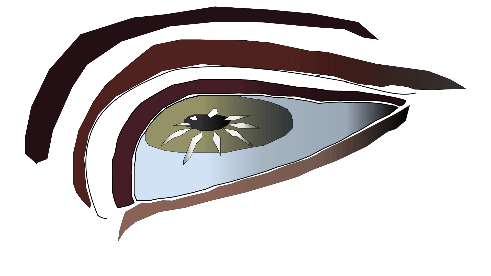
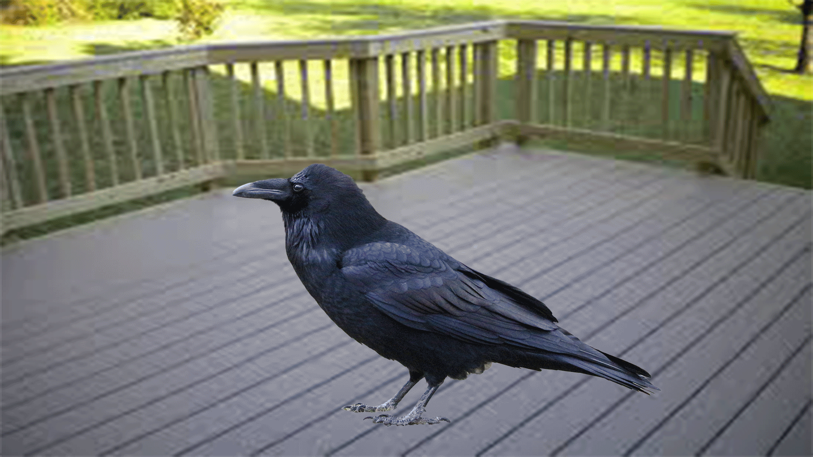

For the first half of this assignment, I created a blink animation using previous artwork from Adobe Illustrator and then imported it to Photoshop for frame editing. I used Illustrator by altering the Emotiveeye piece, then exported a different file titled blink eye. After exporting the file, I created different eye positions, organizing them into separate layers and exporting each file into a different PNGs. Therefore, I can totally control all different eye positions for the animation. In Photoshop, I opened the Timeline panel in creating a frame animation, adjusting the layers of the different eye positions across several frames, showing the eye’s movement of opening and closing. I also made sure to keep the flow of the blink movement simple and smooth. During the process, I experienced frame delays and time alters to control the speed, making the animation feel authentic. This exercise helped me understand how each small movement of a frame can create the illusion of expression and life.

For the second half of this assignment, I created a cut-up cinema animation using a photograph and Photoshop’s Puppet Warp Tool. I used an image of a common raven as my figure to warp for this project. During the process, I first use object selection, isolating the raven from the background and placing it into a separate layer. Then, I duplicated the image, making slight pose changes adjusting and warping different parts of the raven’s body with mesh pins. After the duplication and slight movement in each layer, I arranged them each as a separate frame in the Timeline panel, testing the playback speed until the animation movement sequence runs smoothly. The project overall was more complex than the Blink animation, but the complex methods helped me understand how inspiring and interesting animation can be once the process becomes easier. This exercise taught me how GIFs can transform a still image into a fun and expressive moving sequence.

Homework 7 helped me understand the basic logic behind the process of animation by breaking movement into individual frames to create each animation piece. Before doing the assignment, I thought animation would be a time-consuming, but fun process, but making GIFs taught the opposite how even the shortness and simplicity of loops can still be fun and effective. Each animation exercise taught me different and efficient methods in creating moving sequences. The blink animation taught how each small visual movement can communicate a form of expression, making the eye illusion appear more natural. However, the cut-up cinema animation taught how photographs can be manipulated into motion through digital tools such as Puppet Warp. Both animation projects showed me how important timing is due to how affected the animation can be if the time delay is altered even by a small pose that runs in a wonky, smooth, or calm manner. Even though I did have a few challenges in each project, especially the puppet warp, it became easier after I took my time and followed the tutorial videos and played around with the tools. This assignment is my favorite because of how amazing it is to understand the basic process of animation hands-on when working with platforms such as Adobe Illustrator and Photoshop. GIFs in general set a different scale than other animation pieces due to how short and limited they are. Unlike other animation sequences, GIFs do not sound, they rely on speed and repetition, the limitation of the GIF pushes the creativity behind it. In the end, this amazing project gave me a better understanding of digital frame animation in Photoshop, guided me in thinking with precaution about the process of motion, looping, and digital storytelling.